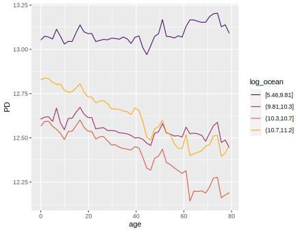
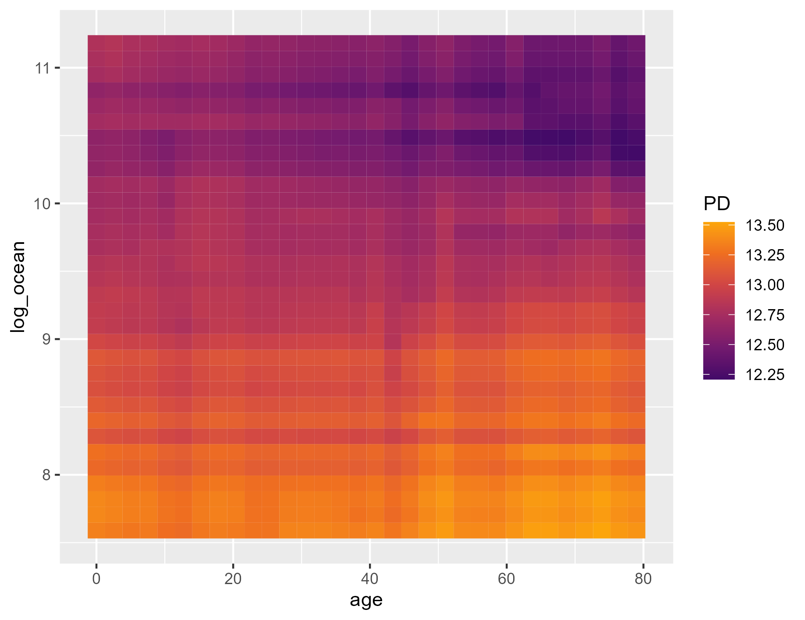
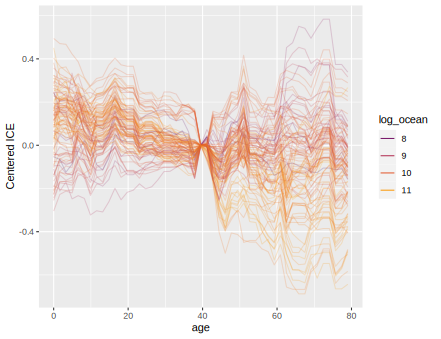
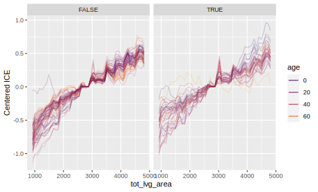

Overview
What makes a ML model black-box? It’s the interactions!
This package quantifies their strength by statistics of Friedman and Popescu [1], and describes them via partial dependence plots [2], or individual conditional expectation plots [7]. The interaction statistics covers interaction strength per feature, feature pair, and feature triple.
The main functions interact(), partial_dep(), and ice()
- work for any model,
- are fast,
- support multivariate predictions (e.g., probabilistic classification),
- respect case weights, and
- work with both data.frames and matrices (e.g., for XGBoost).
Furthermore, different variants of the original statistics in [1] are available.
DALEX explainers, meta learners ({mlr3}, {tidymodels}, {caret}) and most other models work out-of-the box. In case you need more flexibility, a prediction function pred_fun() can be passed to any of the main functions.
Limitation
The statistics in [1] are based on partial dependence estimates and are thus as good or bad as these.
Landscape
{interactML} is not the first R package to explore interactions. Here is an incomplete selection:
- {gbm}: Implementation of m-wise interaction statistics of [1] for {gbm} models using the weighted tree-traversal method of [2] to estimate partial dependence functions.
- {iml}: Variant of pairwise interaction statistics of [1].
- {EIX}: Interaction statistics extracted from the tree structure of XGBoost and LightGBM.
- {randomForestExplainer}: Interaction statistics extracted from the tree structure of random forests.
- {vivid}: Cool visualization of interaction patterns. Partly based on {flashlight}.
- {flashlight}: Model-agnostic implementation of some statistics of [1]. Planned to switch to the much faster {interactML}.
Usage
To demonstrate the typical workflow, we use a beautiful house price dataset with about 14,000 transactions from Miami-Dade County available in the {shapviz} package, and analyzed in [3].
We are going to model logarithmic sales prices with XGBoost.
Fit model
library(interactML)
library(xgboost)
library(shapviz)
colnames(miami) <- tolower(colnames(miami))
miami$log_ocean <- log(miami$ocean_dist)
x <- c("log_ocean", "tot_lvg_area", "lnd_sqfoot", "structure_quality", "age", "month_sold")
# Train/valid split
set.seed(1)
ix <- sample(nrow(miami), 0.8 * nrow(miami))
y_train <- log(miami$sale_prc[ix])
y_valid <- log(miami$sale_prc[-ix])
X_train <- data.matrix(miami[ix, x])
X_valid <- data.matrix(miami[-ix, x])
dtrain <- xgb.DMatrix(X_train, label = y_train)
dvalid <- xgb.DMatrix(X_valid, label = y_valid)
# Fit via early stopping
fit <- xgb.train(
params = list(learning_rate = 0.15, objective = "reg:squarederror", max_depth = 5),
data = dtrain,
watchlist = list(valid = dvalid),
early_stopping_rounds = 20,
nrounds = 1000,
callbacks = list(cb.print.evaluation(period = 100))
)Interaction statistics
# 3 seconds on simple laptop - a random forest will take 1-2 minutes
set.seed(1)
system.time(
inter <- interact(fit, v = x, X = X_train)
)
inter
# Proportion of prediction variability unexplained by main effects of v
# [1] 0.14
plot(inter) # Or summary(inter) for numeric output
Interpretation
- About 14% of prediction variability is unexplained by the sum of all main effects. The interaction effects seem to be important.
- The strongest overall interactions are associated with “log_ocean” (logarithmic distance to the ocean): About 8% of prediction variability can be attributed to its interactions.
- About 10% of the joint effect variability of “log_ocean” and “age” comes from their pairwise interaction.
Remarks
- Pairwise statistics are calculated only for the features with strong overall interactions.
- The statistics need to repeatedly calculate predictions on n2 rows. That is why {interactML} samples 300 rows by default. To get more robust results, increase this value at the price of slower run time.
- Pairwise Friedmans and Popescu’s Hjk2 measures interaction strength relative to the combined effect of the two features. This does not necessarily show which interactions are strongest in absolute numbers. To do so, we can study unnormalized statistics:
H2_pairwise(inter, normalize = FALSE, squared = FALSE, top_m = 5)
Since distance to the ocean and age have high values in overall interaction strength, it is not surprising that a strong relative pairwise interaction is translated into a strong absolute one.
{interactML} crunches three-way interactions as well. The following plot shows them together with the other statistics on prediction scale (normalize = FALSE and squared = FALSE). The three-way interactions are weaker than the pairwise interactions, yet not negligible:
plot(inter, which = 1:3, normalize = F, squared = F, facet_scales = "free_y", ncol = 1)Describe interaction
Let’s study different plots to understand how the strong interaction between distance to the ocean and age looks like. We will check the following three visualizations.
- Stratified PDP
- Two-dimensional PDP
- Centered ICE plot with colors
They all reveal a substantial interaction between the two variables in the sense that the age effect gets weaker the closer to the ocean.
plot(partial_dep(fit, v = "age", X = X_train, BY = "log_ocean"))
pd <- partial_dep(fit, v = c("age", "log_ocean"), X = X_train, grid_size = 1000)
plot(pd)

The last figure tries to visualize the strongest three-way interaction, without much success though:
BY <- data.frame(X_train[, c("age", "log_ocean")])
BY$log_ocean <- BY$log_ocean < 10
plot(ice(fit, v = "tot_lvg_area", X = X_train, BY = BY), center = TRUE)
Variable importance
In the spirit of [1], and related to [4], we can extract from the “interact” objects a partial dependence based variable importance measure. It is rather experimental, so use it with care (details below):
pd_importance(inter)
# Compared with tree split gain importance
xgb.plot.importance(xgb.importance(model = fit), measure = "Gain")
Split gain importance returns same order in this case:
DALEX
The main functions work smoothly on DALEX explainers:
library(DALEX)
library(ranger)
library(interactML)
set.seed(1)
fit <- ranger(Sepal.Length ~ ., data = iris)
ex <- explain(fit, data = iris[-1], y = iris[, 1])
inter <- interact(ex)
inter # Non-additivity index 0.054
plot(inter)
# Strongest relative interaction
plot(ice(ex, v = "Sepal.Width", BY = "Petal.Width"), center = TRUE)
plot(partial_dep(ex, v = "Sepal.Width", BY = "Petal.Width"), show_points = FALSE)
plot(partial_dep(ex, v = c("Sepal.Width", "Petal.Width"), grid_size = 200))Strongest relative interaction shown as ICE plot.
Background
Partial dependence
Let F : Rp → R denote the prediction function that maps the p-dimensional feature vector x = (x1,…,xp) to its prediction. Furthermore, let Fs(xs) = Ex\s(F(xs,x\s)) be the partial dependence function of F on the feature subset xs, where s ⊆ {1, …, p}, as introduced in [2]. Here, the expectation runs over the joint marginal distribution of features x\s not in xs.
Given data, Fs(xs) can be estimated by the empirical partial dependence function
$$ \hat F_s(\boldsymbol x_s) = \frac{1}{n} \sum_{i = 1}^n F(\boldsymbol x_s, \boldsymbol x_{i \setminus s}), $$
where xi \ s, i = 1, …, n, are the observed values of x\s.
A partial dependence plot (PDP) plots the values of F̂s(xs) over a grid of evaluation points xs. Its disaggregated version is called individual conditional expectation (ICE), see [7].
Interactions
Overall interaction strength
In [1], Friedman and Popescu introduced different statistics to measure interaction strength. Closely following their notation, we will summarize the main ideas.
If there are no interactions involving xj, we can decompose the prediction function F into the sum of the partial dependence Fj on xj and the partial dependence F\j on all other features x\j, i.e.,
F(x) = Fj(xj) + F\j(x\j).
Correspondingly, Friedman and Popescu’s Hj2 statistic of overall interaction strength is given by
$$ H_{j}^2 = \frac{\frac{1}{n} \sum_{i = 1}^n\big[F(\boldsymbol x_i) - \hat F_j(x_{ij}) - \hat F_{\setminus j}(\boldsymbol x_{i\setminus j})\big]^2}{\frac{1}{n} \sum_{i = 1}^n\big[F(\boldsymbol x_i)\big]^2}. $$
Remarks
- Partial dependence functions (and F) are all centered to mean 0.
- Partial dependence functions (and F) are evaluated over the data distribution. This is different to partial dependence plots, where one uses a fixed grid.
- Weighted versions follow by replacing all arithmetic means by corresponding weighted means.
- Multivariate predictions can be treated in a component-wise manner.
- Due to (typically undesired) extrapolation effects of partial dependence functions, depending on the model, values above 1 may occur.
- Hj2 = 0 means there are no interactions associated with xj. The higher the value, the more prediction variability comes from interactions with xj.
- Since the denominator is the same for all features, the values of the test statistics can be compared across features.
Pairwise interaction strength
Again following [1], if there are no interaction effects between features xj and xk, their two-dimensional partial dependence function Fjk can be written as the sum of the univariate partial dependencies, i.e.,
Fjk(xj,xk) = Fj(xj) + Fk(xk).
Correspondingly, Friedman and Popescu’s Hjk2 statistic of pairwise interaction strength is defined as
$$ H_{jk}^2 = \frac{A_{jk}}{B_{jk}}, $$
where
$$ A_{jk} = \frac{1}{n} \sum_{i = 1}^n\big[\hat F_{jk}(x_{ij}, x_{ik}) - \hat F_j(x_{ij}) - \hat F_k(x_{ik})\big]^2 $$
and
$$ B_{jk} = \frac{1}{n} \sum_{i = 1}^n\big[\hat F_{jk}(x_{ij}, x_{ik})\big]^2. $$
Remarks
- Remarks 1 to 4 of Hj2 also apply here.
- Hjk2 = 0 means there are no interaction effects between xj and xk. The larger the value, the more of the joint effect of the two features comes from the interaction.
- Since the denominator differs between variable pairs, unlike Hj, this test statistic is difficult to compare between variable pairs. If both main effects are very weak, a negligible interaction can get a high Hjk2.
Modification
To be better able to compare pairwise interaction strength across variable pairs, and to overcome the problem mentioned in the last remark, we suggest as alternative the unnormalized test statistic on the scale of the predictions, i.e., $\sqrt{A_{jk}}$.
Furthermore, we do pairwise calculations not for the most important features but rather for those features with strongest overall interactions.
Three-way interactions
[1] also describes a test statistic to measure three-way interactions: in case there are no three-way interactions between features xj, xk and xl, their three-dimensional partial dependence function Fjkl can be decomposed into lower order terms:
Fjkl(xj,xk,xl) = Fjk(xj,xk) + Fjl(xj,xl) + Fkl(xk,xl) − Fj(xj) − Fk(xk) − Fl(xl).
The squared and scaled difference between the two sides of the equation leads to the statistic
$$ H_{jkl}^2 = \frac{\frac{1}{n} \sum_{i = 1}^n \big[\hat F_{jkl}(x_j, x_k, x_l) - C_{jkl}\big]^2}{\frac{1}{n} \sum_{i = 1}^n \hat F_{jkl}(x_j, x_k, x_l)^2}, $$
where
Cjkl = F̂jk(xj,xk) + F̂jl(xj,xl) + F̂kl(xk,xl) − F̂j(xj) − F̂k(xk) − F̂l(xl).
Similar remarks as for Hjk apply.
Total interaction strength of all variables together
If the model is additive in all features (no interactions), then
$$ F(\boldsymbol x) = \sum_{j}^{p} F_j(x_j), $$
i.e., the (centered) predictions can be written as the sum of the (centered) main effects.
To measure the relative amount of variability unexplained by all main effects, we can therefore study the test statistic of total interaction strength
$$ H^2 = \frac{\frac{1}{n} \sum_{i = 1}^n \left[F(\boldsymbol x_i) - \sum_{j = 1}^p\hat F_j(x_{ij})\right]^2}{\frac{1}{n} \sum_{i = 1}^n\left[F(\boldsymbol x_i)\right]^2}. $$
A value of 0 means there are no interaction effects at all. Due to (typically undesired) extrapolation effects of partial dependence functions, depending on the model, values above 1 may occur.
In [5], 1 − H2 is called additivity index. A similar measure using accumulated local effects is discussed in [6].
Workflow
Calculation of all Hj2 statistics requires O(n2p) predictions, while calculating of all pairwise Hjk requires O(n2p2 predictions. Therefore, we suggest to reduce the workflow in two important ways:
- Evaluate the statistics only on a subset of the data, e.g., on n′ = 300 observations.
- Calculate Hj2 for all features. Then, select a small number $m = O(\sqrt{p})$ of features with highest Hj2 and do pairwise calculations only on this subset.
This leads to a total number of O(n′2p) predictions. If also three-way interactions are to be studied, m should be of the order p1/3.
Variable importance (experimental)
[4] proposed the standard deviation of the partial dependence function as a measure of variable importance (for continuous predictors).
Since the partial dependence function suppresses interaction effects, we propose a different measure in the spirit of the interaction statistics above: If xj has no effects, the (centered) prediction function F equals the (centered) partial dependence F\j on all other features x\j, i.e.,
F(x) = F\j(x\j).
Therefore, the following measure of variable importance follows:
$$ Imp_{j} = \frac{\frac{1}{n} \sum_{i = 1}^n\big[F(\boldsymbol x_i) - \hat F_{\setminus j}(\boldsymbol x_{i\setminus j})\big]^2}{\frac{1}{n} \sum_{i = 1}^n\big[F(\boldsymbol x_i)\big]^2}. $$
It differs from Hj2 only by not subtracting the main effect of the j-th feature in the numerator. It can be read as the proportion of prediction variability unexplained by all other features. As such, it measures variable importance of the j-th feature, including its interaction effects.
References
- Friedman, Jerome H., and Bogdan E. Popescu. Predictive Learning via Rule Ensembles. The Annals of Applied Statistics 2, no. 3 (2008): 916-54.
- Friedman, Jerome H. Greedy Function Approximation: A Gradient Boosting Machine. Annals of Statistics 29, no. 5 (2001): 1189-1232.
- Mayer, Michael, Steven C. Bourassa, Martin Hoesli, and Donato Scognamiglio. Machine Learning Applications to Land and Structure Valuation.” Journal of Risk and Financial Management 15, no. 5 (2022): 193.
- Greenwell, Brandon M., Bradley C. Boehmke, and Andrew J. McCarthy. A Simple and Effective Model-Based Variable Importance Measure. Arxiv (2018).
- Żółkowski, Artur, Mateusz Krzyziński, and Paweł Fijałkowski. Methods for extraction of interactions from predictive models. Undergraduate thesis. Faculty of Mathematics and Information Science, Warsaw University of Technology (2023).
- Molnar, Christoph, Giuseppe Casalicchio, and Bernd Bischl”. Quantifying Model Complexity via Functional Decomposition for Better Post-hoc Interpretability, in Machine Learning and Knowledge Discovery in Databases, Springer International Publishing (2020): 193-204.
- Goldstein, Alex, Adam Kapelner, Justin Bleich, and Emil Pitkin. Peeking inside the black box: Visualizing statistical learning with plots of individual conditional expectation. Journal of Computational and Graphical Statistics, 24, no. 1 (2015): 44-65.